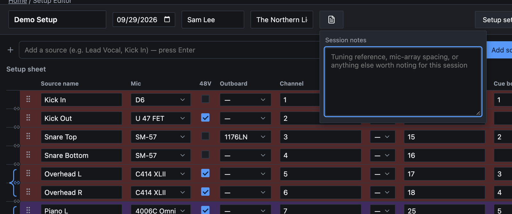
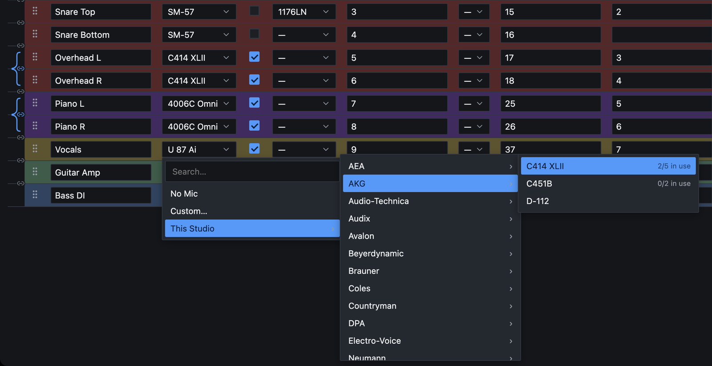
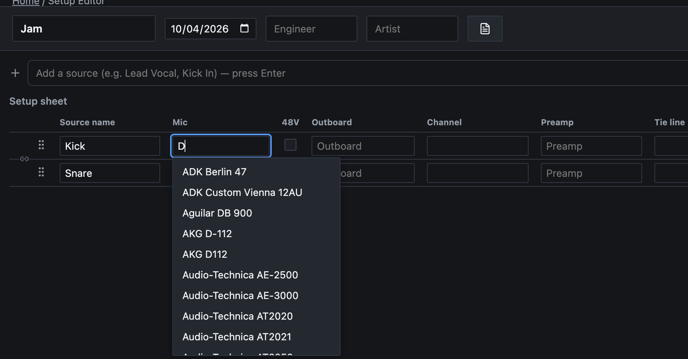
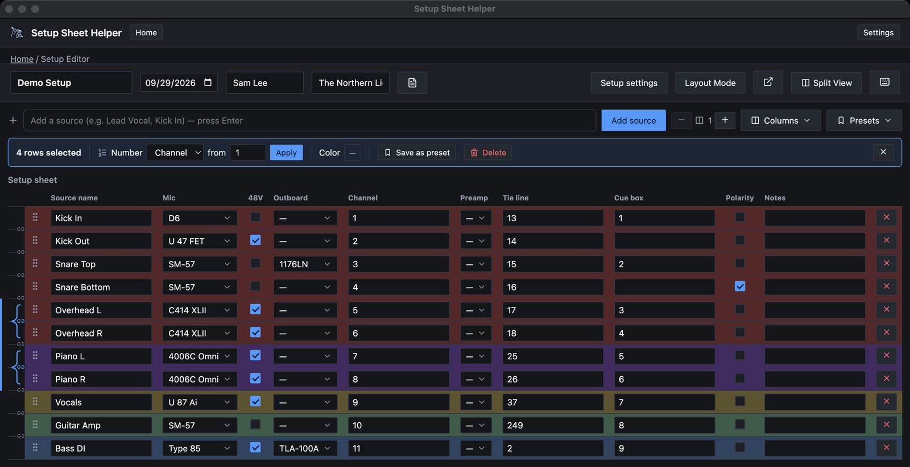
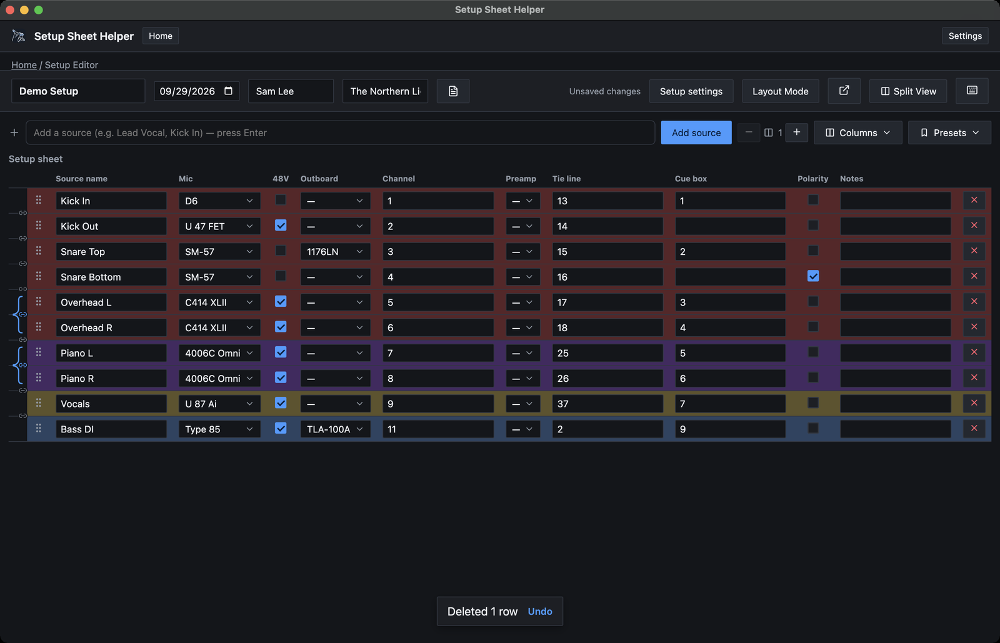

Part 2
Building the setup sheet
Table Mode is where you spend most of a session: typing in sources, choosing mics and preamps, and numbering channels and tie lines. This part covers everything on that screen, starting with what you'll use every time.
The header
The strip across the top of the editor holds the setup's details. Click any of them to edit it in place.
- Setup name. The large box on the left. It becomes the title of the PDF and the suggested file name when you export.
- Session date. Click the calendar icon to pick a date, or type one. New setups start with today's date.
- Engineer and Artist. Both are optional. They print on the line under the title.
If you fill in the same engineer name every time, set Default engineer name in Settings → General. Every new setup then starts with it filled in.
Session notes
The button with the page icon, just right of the Artist box, opens Session notes. Use it for anything that applies to the whole session rather than one source: a tuning reference, mic-array spacing, a reminder about the talkback. Click anywhere outside the box to close it.

When a setup has notes, the icon on the button turns the accent color, so you can tell at a glance that there's something to read.
Adding sources
Each row of the sheet is one source: a mic, a DI, a line input. There are three ways to add one.
- Type and press Return. Click the Add a source box above the sheet, type a name such as Lead Vocal, and press Return (or click Add source). The box clears and stays ready, so you can type a whole input list in one go.
- Press ⌘N. This adds an empty row that you can name afterward.
- Double-click blank space below the table, or the message on an empty sheet. This also adds an empty row.
New rows go to the bottom of the sheet. To rename a source, click its Source name cell and type.
Choosing gear
The Mic, Preamp and Outboard cells each open a picker. Click the cell to open it.

Where gear comes from
Gear is grouped by where it lives, always in this order. You only see the groups that have something in them.
- This Studio: the room's own gear list.
- This Session: gear borrowed for this setup only, added in Setup settings → Session Gear.
- Building Office: a Berklee building's shared pool.
- Personal Gear Locker: your own gear, from Settings → Personal Gear Locker. It's offered in every studio.
- Faculty Reserve: Berklee's faculty pool, when the setup has it switched on.
Inside each group, gear is listed by manufacturer. Point at a manufacturer to see its models, then click one.
Finding a model quickly
- Search. Start typing in the Search… box at the top of the picker. Results replace the browsing list. If the same model is stocked in more than one place, it appears once with the combined count, and the studio's own copies are used first.
- Keyboard. Use ↑ and ↓ to move, → to open a group, ← to back out, and Return to pick.
- No Mic (or No Preamp, No Outboard) empties the cell.
- Custom… lets you type any name, for gear that isn't on any list. Enter it under Gear name and click Save. A custom name isn't counted against anything.
How double-booking is prevented
Every model in the picker shows a count such as 2/5 in use: two are already on other rows, out of five the room has. When all of them are taken, the model is grayed out and can't be picked. You can't put the same mic on more rows than there are mics.
A few units are both a preamp and a processor, such as the UA 6176 or the Millennia STT-1. They appear in both the Preamp and Outboard pickers, but they share one count, so two 6176s can't turn into four. On a single row, a unit you've picked as the preamp isn't offered again as outboard. Patching it once already gives you both halves.
Automatic notes tags
When you pick gear from Building Office, Faculty Reserve or Personal Gear Locker, the app adds a tag such as [Faculty Reserve] to the end of that row's Notes. It reminds whoever sets up the room that the item has to be fetched. Anything you typed in Notes is left alone, and the tag changes or disappears if you pick something else.
The other cells
- 48V
- Tick for phantom power. It prints as ✓.
- Channel
- The console channel, as a whole number from 1 up.
- Tie line
- The tie line or wall-box input, also a whole number. Two rows with the same tie line get a warning (see Warnings).
- Cue box
- Free text, so a stereo cue like 1-2 works as well as a single number.
- Polarity
- Tick to flip polarity. It prints as Ø.
- Notes
- Anything else about this source: placement, a pad, a reminder.
- Outboard
- Starts as one column. Use the − and + buttons next to the column count in the toolbar to add more outboard columns, one per piece of gear in the chain. Removing a column takes away the last one and clears it on every row. There's always at least one.
To hide columns you don't use or change their order, open Columns in the toolbar. Part 7 covers it, along with stereo pairs: the small link icons between rows join two rows into a pair that stays in step.
Quick setups
A quick setup (from Start a quick setup → on the home screen) has no studio behind it, so there's no gear list to pick from. Its Mic, Outboard and Preamp cells are plain text boxes instead, with the placeholders Mic, Outboard and Preamp.

- Start typing and a list of matching gear appears, drawn from every studio and gear list in the app. It shows up to 20 matches.
- Click a suggestion, or use ↑ and ↓ and press Return. The list shows the manufacturer to help you find the right one, but only the model name goes in the cell.
- You don't have to pick a suggestion. Whatever you type stays exactly as typed. Press Esc to close the list.
Because there's no stock to count, a quick setup shows no "in use" counts and doesn't stop you from using a name twice.
Selecting rows
Selecting rows lets you number, color, move, duplicate or delete several at once. Each row has a gutter at its left edge, where the grip handle is. Click the gutter, not the cells, to select.
- Click a row's gutter to select that row.
- ⇧-click another row to select everything in between.
- ⌘-click to add or remove one row without touching the rest.
- ⌘A selects every row (when you're not typing in a box).
- Esc clears the selection.
Selected rows get a blue bar along the left edge of the sheet, and the selection bar appears above the table.
You can select without the mouse. Press Tab until a row's gutter has focus, then use ↑ and ↓ to move between rows and ⇧↑ or ⇧↓ to extend the selection. Space or Return selects the focused row.
The selection bar
The selection bar appears whenever rows are selected. It says how many, such as 4 rows selected, and everything on it acts on those rows only.

Number
Number fills in a run of channels, tie lines or cue boxes for you.
- Select the rows to number.
- Next to Number, choose Channel, Tie line or Cue box.
- In the from box, type the first number.
- Click Apply, or press Return in the number box.
The selected rows are numbered from top to bottom: 17, 18, 19 and so on. Anything already in that column on those rows is replaced.
Press ⌘⇧N with rows selected to jump straight to the number box. Type the start number and press Return.
Color, Save as preset, Delete
- Color opens a palette of swatches. Pick one to tint every selected row, which helps group drums, keys and vocals at a glance. No color removes the tint. Row colors also appear in the PDF (when Colored is on) and in spreadsheets.
- Save as preset saves the selected rows as a channel preset you can load into other setups. See Part 7.
- Delete deletes the selected rows.
- The × at the right end clears the selection.
Moving, duplicating and deleting
- Move. Drag a row by its grip handle. If you drag one of several selected rows, the whole selection moves together. Dragging either row of a stereo pair moves both.
- Duplicate. Press ⌘D to copy the selected rows. Each copy goes directly under its original, and the copies become the new selection.
- Delete. Click the red × at the end of a row, click Delete in the selection bar, or press ⌘⌫. The forward-delete key (fn⌫ on a laptop) works too, without ⌘.
After a delete, a message such as Deleted 1 row appears at the bottom of the window for five seconds. Click Undo on it to bring the rows back.

Warnings
Two kinds of yellow warning can appear inside a cell.
- duplicate tie line
- Two or more rows share the same tie line number. The warning shows on every row involved. Change one of the numbers and it goes away. If you export anyway, the PDF puts a "!" in front of those tie line numbers so the clash is easy to spot on paper.
- Preset expected: …
- You loaded a channel preset that names gear this studio doesn't have, such as Preset expected: U 47 FET. The row is added with that cell left empty. Pick something from the picker and the warning clears.
Undo and saving
Undo and redo
Press ⌘Z to undo and ⌘⇧Z to redo. The app keeps your last 100 steps. Undo covers rows and everything in them, the number of outboard columns, the header fields and session notes.
- Column choices (which columns are shown, and their order) aren't part of undo. Change them back in the Columns menu.
- While you're typing in a box, ⌘Z undoes your typing in that box first.
Autosave
There's no Save button to remember. The app saves about a second after you stop typing, and at least every five seconds if you keep going. It also saves when you leave the setup or quit. Press ⌘S any time to save right away.
The save status sits in the toolbar, just right of the header fields:
- Unsaved changes: you've made a change that hasn't been written yet.
- Saving…: it's being written now.
- Saved, with a check mark: done. It shows for a couple of seconds, then disappears.
- Couldn't save — retrying, in red: something went wrong. Keep working. The app tries again every 10 seconds and saves as soon as it can.
Each setup also remembers which mode you left it in, so it reopens in Table Mode or Layout Mode just as you left it.